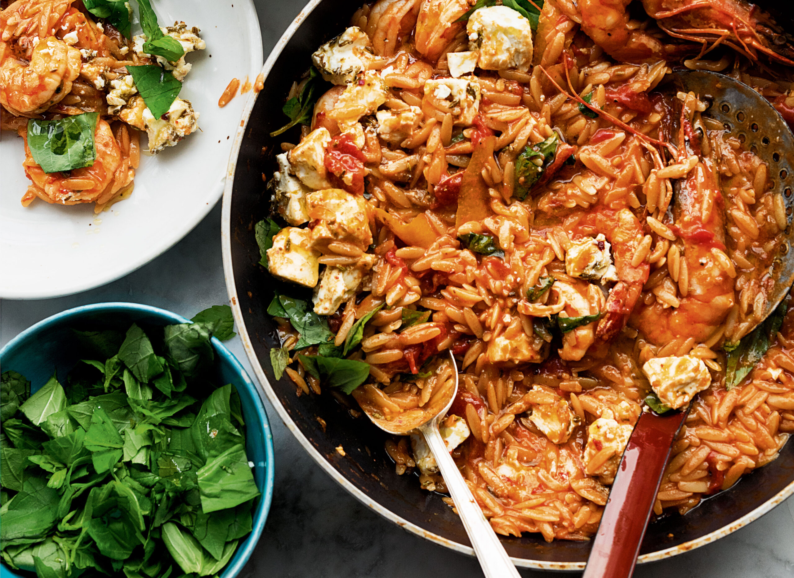

Prawn, Feta, Basil and Orzo

Prawn and orzo with feta marinated in fennel and chilli in a tomato and basil sauce.
Ingredients
- 200g feta
- 1/2 tsp chilli flakes
- 2 tsp fennel seeds
- 75ml olive oil
- 250g orzo
- 3 strips of finely shaved orange skin
- 400g tin chopped tomatoes
- 500ml vegetable stock
- 400g prawns
- 30g basil leaves
- salt and black pepper
Steps
- In a bowl mix tghe feta with chilli flakes, fennel seeds and 1tbsp of the oil. Set aside.
- Place a large saute pan, for which you have a lid, on a med-high heat. Add 2tbsp of oil, orzo, salt and pepper. Fry for 3-4 minutes until orzo is browning. Remove from pan and set aside.
- Return same pan to heat and add remaining oil, chilli flakes, fennel seeds, garlic and orange skin. Fry for 1 minute then add the tomatoes, stock, 200ml water and more salt and pepper.
- Cook for 2-3 minutes then add orzo back to pain. Cover and cook for additional 10 minutes until pasta is risotto-like in texture.
- Add prawns to pan and cook for 2-3 minutes, until pink.
- Remove from the heat and stir through basil. Serve with marinated feta sprinkled on top.
Recipe taken from Simple by Yotam Ottolenghi.
Back to Recipes